感测核心换位置、语音补生活记录；佩戴方式决定哪些时刻能留下信息。
[S01] [S23]AI PRODUCT DAILY / 2026-10-24
一颗核心，两种戴法；锁屏接住代理任务
Alloop让感测核心在戒指与手环之间切换，Monish把待答问题送到手机，Instant按记得的内容找文件。再看喂鸟器、扫地机器人，以及能继续编辑的积木、三维部件与游戏画面。
2026年10月24日 · 早间刊
进入今日方向与目录 →AI PRODUCT DAILY / 2026-10-24截止 04:00:30 Toronto / 08:00:30 UTC
今天值得看的操作与产品
锁屏只接当前问题，后台继续工作；进度、批准和真正停止需要分别对上。
[S11] [S59]积木连接、三维部件和画面中的角色各有身份；继续修改需要保留这些关系。
[S89] [S93] [S96]- 01Alloop让同一枚感测核心换到手环或戒指，语音补上生活记录Alloop Trio · 硬件／模块化健康穿戴
- 02Birdbuddy把观鸟入口降到99美元，自动认鸟仍是订阅功能Birdbuddy Nook / Home · 软硬结合／家庭观鸟
- 03Monish把代理的等待与批准放上锁屏，离开电脑也能接续任务Monish · 产品 · PH 发现
- 04Instant按记得的内容找Mac文件，并标出原文Instant Search · 产品 · PH 发现
- 05Qrevo Edge 3 Pro更擅长跨门槛和清地毯，小杂物仍要先收Roborock Qrevo Edge 3 Pro · 硬件／独立评测
- 06极米把记事入口放到眼镜和手腕，录下的声音再整理成待办极米记得 G1／L1 · 记忆穿戴预约
- 07Adventurer预告249美元插电盒组合，便携补电能力随之取消Meta Adventurer plug-in case · 硬件／开售节点
- 08先给材料再说要写什么，讯飞把草稿直接放回输入框讯飞输入法 16.0 · 软件更新
- 09Duet接手待办前逐项授权，断开应用仍须另清记忆Claude Duet · 产品更新
- 10企业Claude不再先选聊天或Cowork，长任务接着原对话在云端跑Claude Enterprise · 产品更新
- 11Plango用Finder标签限制代理，模型只能提高风险等级Plango · 产品 · 技术说明
- 12GitHub把Teams里的缺陷通知接上编码代理，讨论串直接成为修复上下文GitHub Copilot in Teams · 产品更新／公开预览
- 13Resend把收件、分派和回复放进同一个邮箱，代理可以先写草稿再交接Resend Inboxes · 产品／邮件API
- 14OpenHands补齐重启后的云账号连接，创建代理前先把机器规格说清楚OpenHands Agent Canvas 1.33.0 · 开源软件更新
- 15Inyon让手机接着处理电脑上的代理请求，回答按钮不再随新消息跳动Inyon 0.20.2–0.20.5 · 开源软件更新
- 16Paperclip给代理任务加私有成员表，分享子任务不再连带父任务Paperclip v2026.1023.0 · 开源软件更新
- 17Promptfoo把同一道题时对时错的结果单独列出来Promptfoo 0.125.0 · 开源软件更新
- 18Skylos把AI代码审查绑到获批的提交，只读有限源码包Skylos 5.0.0 · 开源软件更新
- 19Dexory给高货架异常标位置，再复核低置信图片Dexory Storage Health + Cosmos Reason2 · 软硬结合／仓储巡检
- 20把材料摆成关系，再让代理按这张工作地图接着做MalleableSpace / Huabu · 研究原型
- 21先把奖励与约束问清楚，CARL再生成训练代码CARL · 研究原型
- 22积木模型先查碰撞与连接，再交给人真正搭起来BrickWright · 论文／创作研究框架
- 23点出一条手臂，必要时再画框：FlexPart让三维拆件少做一层标注FlexPart · 论文／可交互三维生成研究
- 24给灰盒游戏换画风，还得记住每个角色何时进场AnyGameRenderer · 论文／游戏视频渲染研究
AI PRODUCT DAILY / 2026-10-24硬件／模块化健康穿戴 · 2026-10-23T13:00:00Z · 窗口内观察
Alloop让同一枚感测核心换到手环或戒指，语音补上生活记录
Alloop Trio面向同时想要运动手环和睡眠戒指的人，同一Cube核心可在两种外壳间移动。
2.4克光学PPG核心记录生理数据，Halo模块补电并接收语音，应用把生活记录与指标放在一起。睡觉时换成戒指，运动时换回手腕，仍需手动拆装并检查贴合。
双击记录一顿饭、一次训练或感受，省去掏手机逐项填表；灯光与振动提供无屏反馈。应用也接受文字和照片，可连接兼容健康平台的已有记录。
10月23日是正式展示，官网仍为众筹通知入口，299美元起与交付安排属于计划。
产品判断
Bio Age是厂商综合指标，不能当作医学诊断；佩戴切换、语音识别和长期续航尚无独立测试。
AI PRODUCT DAILY / 2026-10-24软硬结合／家庭观鸟 · 2026-10-22T13:00:00Z · 近三日 / 边界见深读
Birdbuddy把观鸟入口降到99美元，自动认鸟仍是订阅功能

Nook和Home把院子里的来访拍成手机照片、视频与物种卡片，10月22日开放订购，官网写十一月开始交付。
装入相机、连蓝牙与Wi-Fi，扭转圆形镜头选择横竖画幅，再挂到鸟会停留的位置。来访触发拍摄，用户在同一应用查看照片、视频和直播。
Nook为99美元，太阳能版159美元；Home为219美元，容量更大且支持5GHz网络。种子容量分别约零点九升与一点四升；Nook只支持2.4GHz。
免费版保留拍摄和手动认鸟；自动识别、命名常客等属于Premium，不能把硬件价当完整体验价。家庭方案试用一个月后按年收98.99美元，包含十位访客权益。
产品判断
小机身适合有限空间，但补粮、清洗、网络与冬季充电仍要人照料，当前订购不等于已经收货。
AI PRODUCT DAILY / 2026-10-24产品 · PH 发现 · 2026-10-23 · 近三日 / 边界见深读
Monish把代理的等待与批准放上锁屏，离开电脑也能接续任务
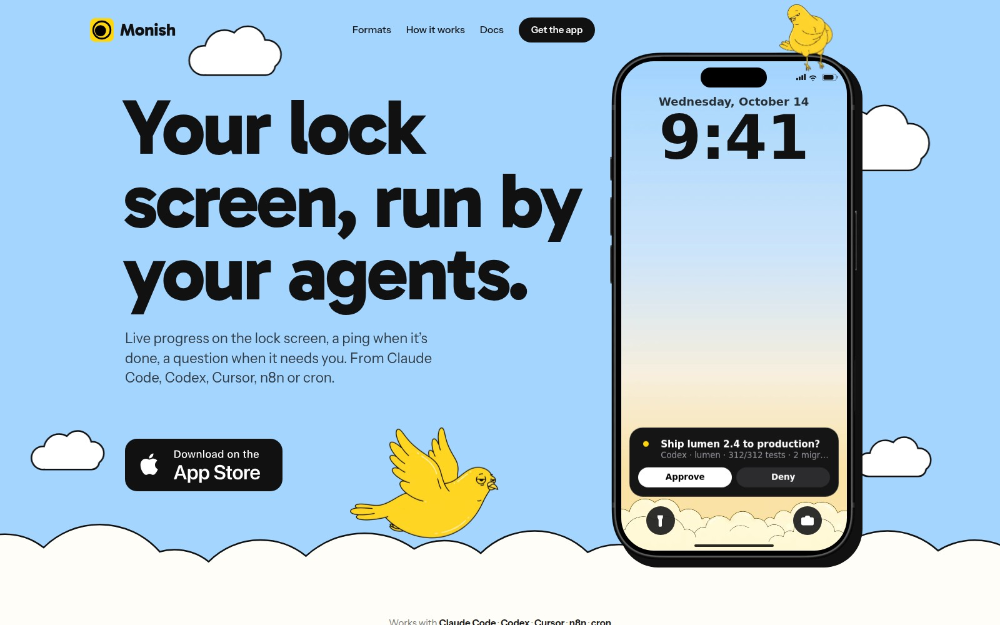
Monish让运行脚本或编程代理的人，在iPhone上查看进度、结果和待答问题。
安装后复制带设备密钥的一行指令，代理按文档调用HTTPS端点，无须在电脑安装另一套客户端。每台手机独立设置，密钥所在指令需当作凭据保护。
长任务更新同一张Live Activity；完成才通知，审批直接点Approve或Deny，超时按拒绝处理。卡片可放步骤、倒计时和测试数；默认一小时未答按否处理，输入文字回复则进入应用。
免费、无需账户，要求iOS 17.2；消息经服务器转发并保留48小时，回复保留24小时。无需Face ID的锁屏批准不能当作强身份复核；手机本地信息流保留三十天。
产品判断
它传递决定，不自动证明代理已停止；Stop按钮和执行结果仍取决于接入脚本。
AI PRODUCT DAILY / 2026-10-24产品 · PH 发现 · 2026-10-23 · 近三日 / 边界见深读
Instant按记得的内容找Mac文件，并标出原文

Instant适合记得文件内容、却想不起名字或目录的Mac用户。
选择目录建立本地索引，按Option-Space输入意思相近的描述，查看匹配文件与原文片段。结果列表与原文预览并排呈现，相关句子突出显示，便于核对前后条件。
作者称采用后期交互嵌入模型；文本、照片和无文本层扫描件都在支持范围。不必将散落资料搬进另一套知识库，搜索目录由用户选择；后续只更新发生变化的文件。
免费、无需账户，要求macOS 15；约1GB模型需下载，首次大照片库索引可能耗时数小时。更新检查与可关闭的匿名统计仍可能联网；本地检索不等于应用从不通信。
产品判断
95%命中率缺少公开测试口径，不宜当作个人文件库的保证。
AI PRODUCT DAILY / 2026-10-24硬件／独立评测 · 2026-10-23 · 近三日 / 边界见深读
Qrevo Edge 3 Pro更擅长跨门槛和清地毯，小杂物仍要先收
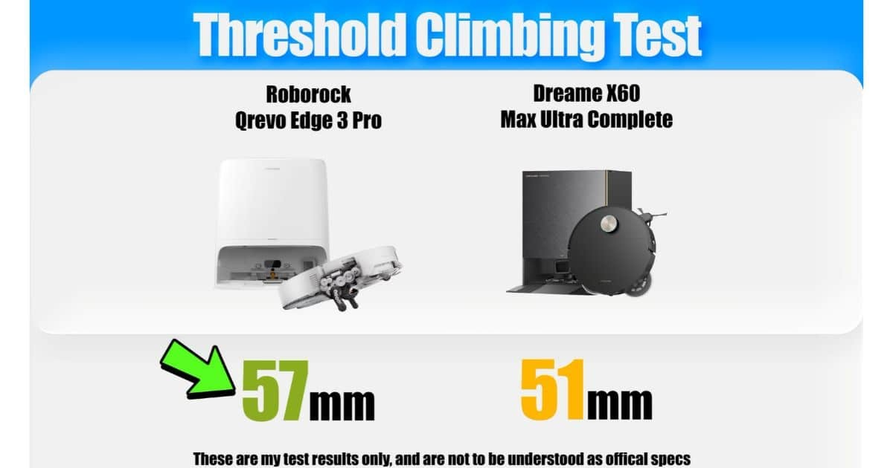
VacuumWars的10月23日测试关注已经上市的QrevoEdge3Pro，不是新机发布。
可升降激光雷达收低进入家具下，底盘抬升跨门槛，地图与相机识别决定走哪条路。最低约7.95厘米通行高度，房间选择、禁区与时间表决定本次清扫范围。
实验中清出地毯埋沙93%，稳定跨过57毫米单级障碍；64毫米一次成功却没能重复返航。
避障为24件中18件，不能据此省掉收拾细小物品。拖布清洗、烘干和补液由基站接手。基站自动处理不代表脏水和耗材不用更换，地图也无法保证任何门槛都能返程。
产品判断
美国官方店观察价1299.99美元。更适合高门槛与地毯需求，不能只按36000Pa宣传值判断清洁。
AI PRODUCT DAILY / 2026-10-24记忆穿戴预约 · 2026-10-22T16:00:00+08:00 · 近三日 / 边界见深读
极米把记事入口放到眼镜和手腕，录下的声音再整理成待办
G1眼镜和L1手环面向常忘记口头约定、灵感与待办的人，10月22日开放预约。
随身录音后自动整理纪要与提醒，再用对话找回过去内容；L1也能作为吊坠佩戴。它针对顺口约定与临时念头，省掉拿出手机寻找录音入口的一步。
G1采用钛金属3D打印结构，标称轻至17.9克；两款主打2—5天综合续航。
厂商称原始音频用后删除，L1记忆加密存手机；不等于完整处理链全部本地。删除原始声音不必然删除由它生成的纪要和提醒，转写在哪里处理仍未说明。
产品判断
价格、订阅、交期与完整记忆管理仍未核实。它们是专门记事设备，不能套用同品牌显示眼镜或运动手环的功能。
AI PRODUCT DAILY / 2026-10-24硬件／开售节点 · 2026-10-23 · 近三日 / 边界见深读
Adventurer预告249美元插电盒组合，便携补电能力随之取消
Meta公告为已有Adventurer安排黑框灰镜片与插电盒组合，预定10月23日开售。
相机看眼前、麦克风收语音，按键或口令调用助手，回答经开放式扬声器播放。手机应用继续管理设置与照片，动作键也可配置快捷操作。
公告起价249美元，保留12MP相机与3K视频；本次未核实这一组合实际可结账。插电盒约七十五分钟充到九成，普通盒子的四十小时额外电量不适用这一配置。
普通折叠盒可带额外电量，插电盒不能按同样方式计算外出续航。处方镜片、地区与配置另核。
产品判断
当前默认商店页仍显示299美元透明镜片版；低价不是所有Adventurer的统一售价，也不是新一代硬件。
AI PRODUCT DAILY / 2026-10-24软件更新 · 2026-10-22 · 近三日 / 边界见深读
先给材料再说要写什么，讯飞把草稿直接放回输入框
给经常在手机上回复客户、汇报进度的人，16.0把组织材料也放进键盘。
提供文字或截图，再说明写作任务；生成稿回到输入框，由本人检查发送。信息卡整理人物、时间和要求，用户仍需挑出相关材料并剔除过期安排。
任务信息卡保留背景，授权的表达偏好用于后续措辞；语音也支持边说边改。空格键保留语音入口，Spark-ASR-2.0负责发布方披露的语音识别路径。
“问AI”改为“交给AI”，技能坞可组合常用能力。Android商店已列16.0.1。
产品判断
省的是反复整理背景与切换聊天工具；进度、日期和承诺仍要核对。10月22日更新列近三日补充，精确费用与各端覆盖未确认。
AI PRODUCT DAILY / 2026-10-24产品更新 · 2026-10-23 · 近三日 / 边界见深读
Duet接手待办前逐项授权，断开应用仍须另清记忆
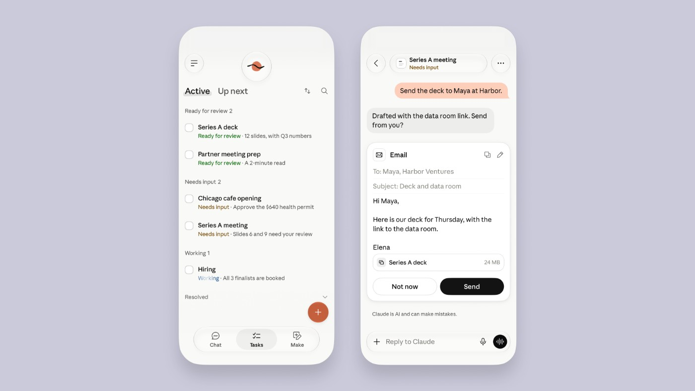
Claude Duet替专业人士和小企业主追踪邮件、日程与待办，早晨发简报，接收文字或语音任务。
它在云端继续工作，返回文档、表格或待批准动作；任务页可查看进度并中途改方向。连接应用提供业务背景，任务在独立云电脑继续执行，手机退出不直接结束工作。
10月23日新增披露具体授权与信息检查：付款限定商户和金额，发信检查收件人与敏感内容。
断开连接只停止新访问，已有记忆须另行重置；1Password接入仍在计划中。证券交易与账户间转账仍被禁止，不能通过反复批准解锁。
产品判断
美国Pro/Max候补预览，后台检查也用共享额度；适合减少追踪，不能当作已验证的全自动代办。
AI PRODUCT DAILY / 2026-10-24产品更新 · 2026-10-23 · 近三日 / 边界见深读
企业Claude不再先选聊天或Cowork，长任务接着原对话在云端跑
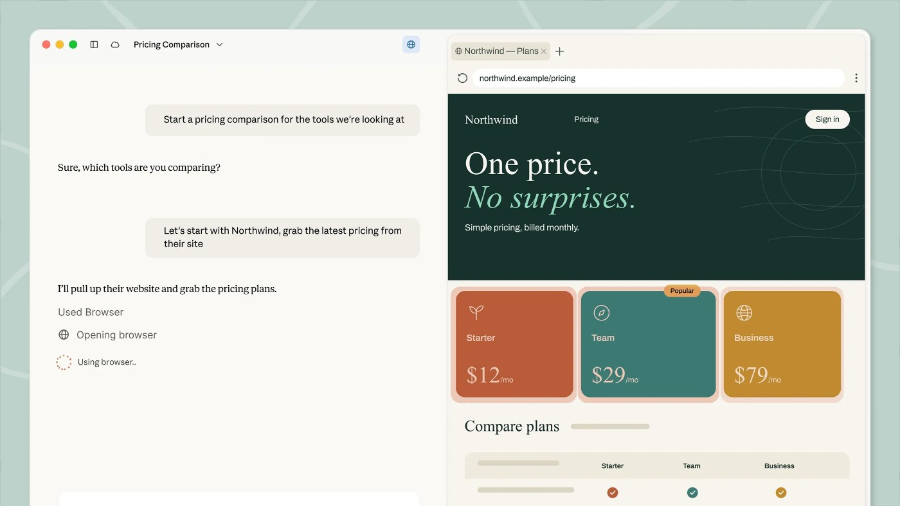
企业用户先提问题，需要处理文件或运行代码时，同一对话进入Cowork云会话并交回成果。
电脑合上仍可继续，手机可接回进度；既有项目、连接器、技能与插件保留。每个执行会话有独立虚拟机，闲置保存加密快照，自创建起三十天过期。
10月23日是Enterprise全面可用；Pro/Max统一入口九月已发布，不应重复算新产品。
现有组织默认未开，11月16日自动开启规则受管理员选择与前置能力约束；特殊合规配置暂不支持。磁盘期限与聊天保留期不同，手机继续查看也不会自动开放本地全部文件。
产品判断
Efficient mode限制Sonnet/Haiku，但仍按用量计费。减少选入口，并不消除长任务费用和交付复核。
AI PRODUCT DAILY / 2026-10-24产品 · 技术说明 · 2026-10-22 · 近三日 / 边界见深读
Plango用Finder标签限制代理，模型只能提高风险等级
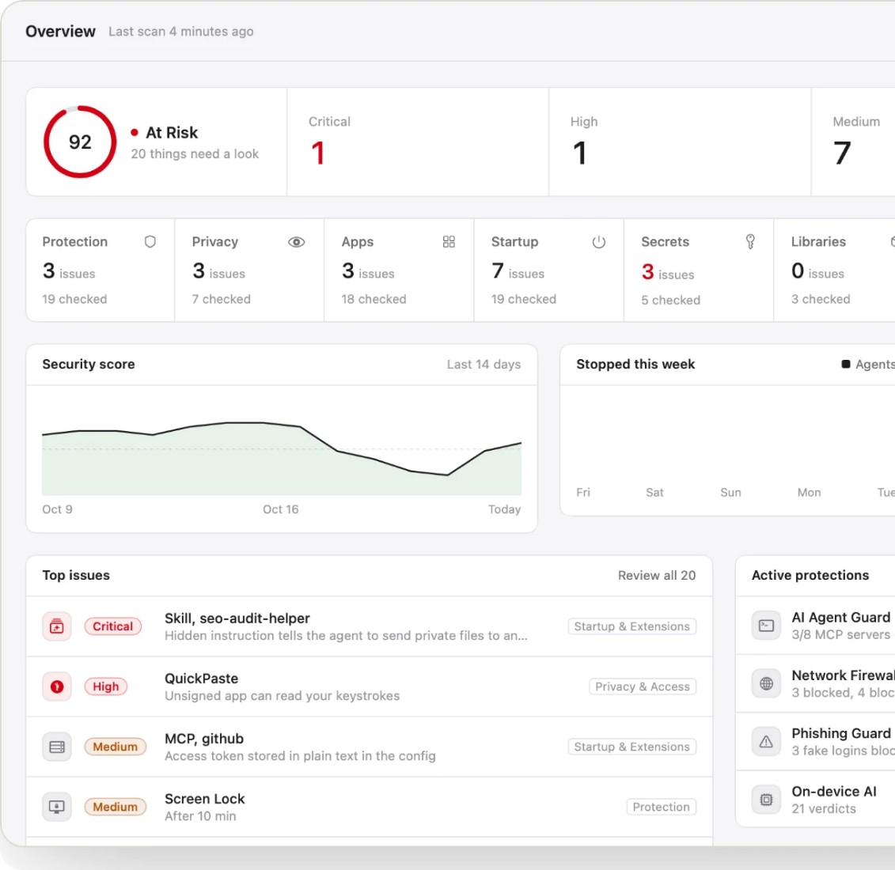
Plango为使用Claude Code、Cursor或Codex的个人Mac用户集中显示命令、文件访问和网络活动。
固定规则先定风险，本地小模型可提高评级；Protect阻止高危和严重动作，Strict再阻止中危。日志保留允许或阻止的原因，用户可沿具体动作查找触发规则。
Finder颜色标签可表达禁止访问、只读或先询问，.env密钥可迁入Keychain。工具列表留指纹，已信任服务器改变工具列表或插件文件被替换后会标记变化。
要求Apple Silicon、macOS 15及16GB内存；7天免卡试用，之后每月4.99美元。漏洞查询可发送包名与版本到OSV，或改选本地数据库；接入外部AI仍会发送相关上下文。
产品判断
10月22日技术说明是本次增量，防护首发更早；覆盖与误报尚无独立验证。应用本身也需系统权限。
AI PRODUCT DAILY / 2026-10-24产品更新／公开预览 · 2026-10-23 · 近三日 / 边界见深读
GitHub把Teams里的缺陷通知接上编码代理，讨论串直接成为修复上下文
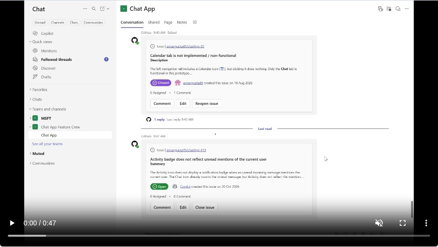
GitHub将Teams通知应用与Copilot合并，适合已经在频道讨论缺陷、却要另开工具整理修复要求的开发团队。
收到问题或PR通知后，回复@GitHub并描述修改，代理读取关联对象及整段讨论，在云端工作并返回待审PR。
同一入口继续接收通知、查看进度和补充要求；这是应用整合更新，Teams编码代理并非今天首次出现。
频道使用应用身份，私聊沿用个人权限；需要写权限才能触发修改，整串消息可能进入生成产物的上下文。
产品判断
通知无需Copilot订阅，代理需要付费资格及启用云端环境；旧应用11月16日退役，当前文档仍标公开预览。
AI PRODUCT DAILY / 2026-10-24产品／邮件API · 2026-10-22 · 近三日 / 边界见深读
Resend把收件、分派和回复放进同一个邮箱，代理可以先写草稿再交接
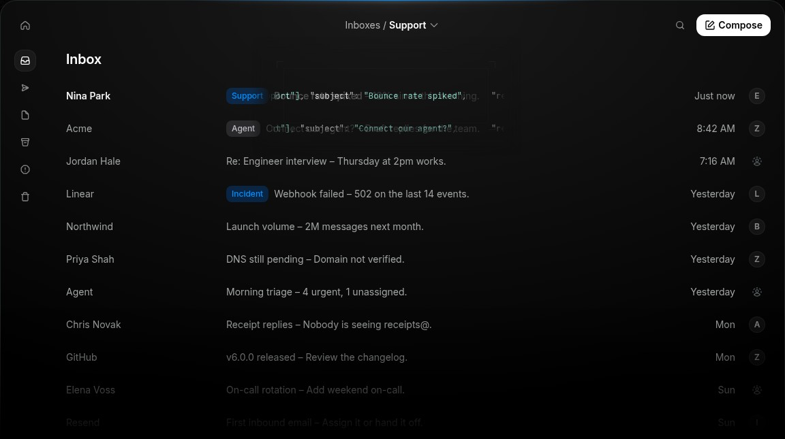
Resend Inboxes面向自建客服、招聘或通知处理流程的团队，把自有域名地址接成共享邮箱。
邮件自动组织成讨论串，成员能分派、留备注，应用或代理通过API、MCP及CLI读取并准备回复。
开发者不用只接一个收信webhook后，再自行补齐讨论串、草稿和处理状态；代理动作可以单独配置。
创建回复草稿与发送分开；重复创建同一封邮件的未发送草稿，不会自动覆盖正文，更新需用相应接口。
产品判断
免费含3个邮箱及每月3000封收发额度；新增邮箱标价$1，但计费周期未核实，模型与业务系统接入仍需另算。
AI PRODUCT DAILY / 2026-10-24开源软件更新 · 2026-10-23T13:46:20Z · 窗口内观察
OpenHands补齐重启后的云账号连接，创建代理前先把机器规格说清楚
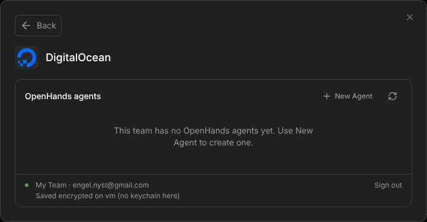
OpenHands 1.33.0改善Agent Canvas里创建和跟踪云端代理的操作，重点是重启、选机器和看进度。
启用的网页版能把DigitalOcean凭据保存在宿主机支持的秘密存储中，重启后继续显示账户及存储位置。
新代理默认选择目录中最小的可用规格；自动化卡片显示后端真实阶段，密码输入默认遮挡并可临时查看。
没有可用安全存储时只保存在内存并提示未保存，不会假装已持久化；网页桥接仍需显式启用。
产品判断
MIT许可不含模型和云机器费用；最小规格不代表所有任务适用，macOS安装包签名仍有限制，本刊未运行云任务。
AI PRODUCT DAILY / 2026-10-24开源软件更新 · 2026-10-24T06:16:04Z · 窗口内观察
Inyon让手机接着处理电脑上的代理请求，回答按钮不再随新消息跳动
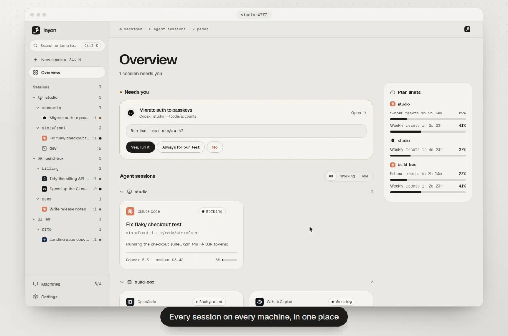
Inyon让离开电脑的开发者用Android或浏览器接着查看编码代理会话，沿用桌面已有的代理和账户。
手机扫描配对码后，能看聊天、终端和代码差异，回答权限请求并发下一步指令，不必重开一份对话。
本轮更新让会话卡片固定位置，新活动等待点击展开；配对前先显示地址与设备身份，Windows也有常驻托盘入口。
关闭Windows窗口仍保持连接，Quit才停止；令牌存储与一次性加入命令有改进，但代理执行仍有真实文件影响。
产品判断
MIT许可不包含模型费用，手机端只确认Android；最新补丁修复更新后旧程序仍运行的问题，iOS可用性未确认。
AI PRODUCT DAILY / 2026-10-24开源软件更新 · 2026-10-24T00:03:59Z · 窗口内观察
Paperclip给代理任务加私有成员表，分享子任务不再连带父任务
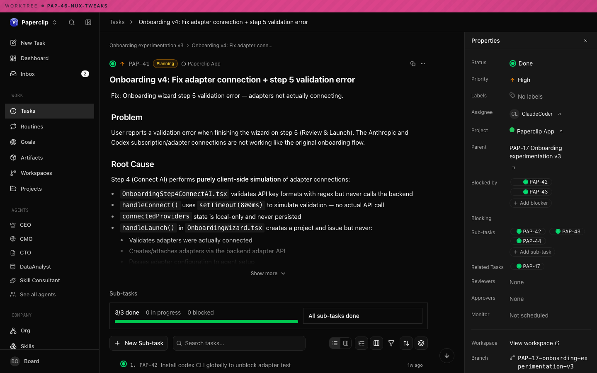
Paperclip为多人共用的代理工作台增加私有项目与任务，适合需要把客户资料、招聘或内部工作分开的小团队。
创建任务时选择Private，再指定人和代理；界面显示直接、项目或继承权限，子任务可以单独分享。
权限检查覆盖搜索、日志、附件、运行记录与MCP等入口；同一代理的可见范围还受当前责任用户限制。
撤销一个授权不等于清掉其他授权，也无法收回已经读到的记忆；管理员紧急访问必须显式触发并留痕。
产品判断
本版还扩大Operator预设权限，并默认阻止未定价用量继续消耗预算；升级者需要核对角色和价格配置。
AI PRODUCT DAILY / 2026-10-24开源软件更新 · 2026-10-23T15:32:01Z · 窗口内观察
Promptfoo把同一道题时对时错的结果单独列出来
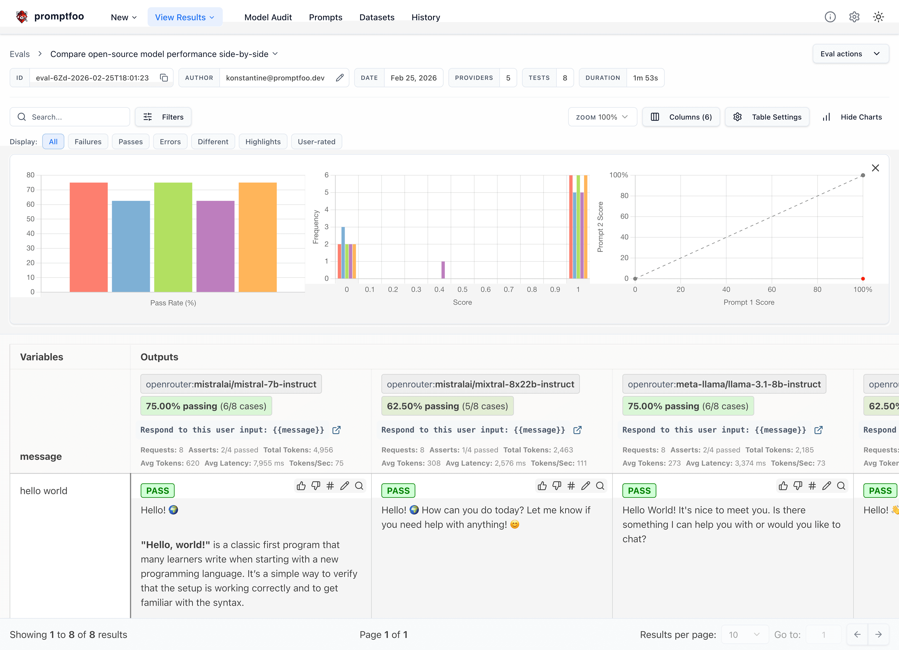
给维护提示词、代理和检索应用的开发者，Promptfoo新增重复运行的稳定性汇总，方便定位偶尔失败的同一道测试。
输入相同测试、变量、模型和提示词，多次运行后按组汇总通过、失败、错误与缓存复用；完整分组可以导出JSON。
命令行列出最多五组不稳定结果，错误不进入通过率分母；目标或评分器复用缓存时，不显示置信区间。
同版安全模式仅限制内联JavaScript，仍允许其他执行路径，不能当作不可信配置沙箱；代理SDK改为可选依赖。
产品判断
它省掉手工合并重复结果的代码，但不能替团队补齐遗漏的测试要求；MIT许可也不免除模型和评分调用费用。
AI PRODUCT DAILY / 2026-10-24开源软件更新 · 2026-10-23T03:55:20Z · 近三日 / 边界见深读
Skylos把AI代码审查绑到获批的提交，只读有限源码包
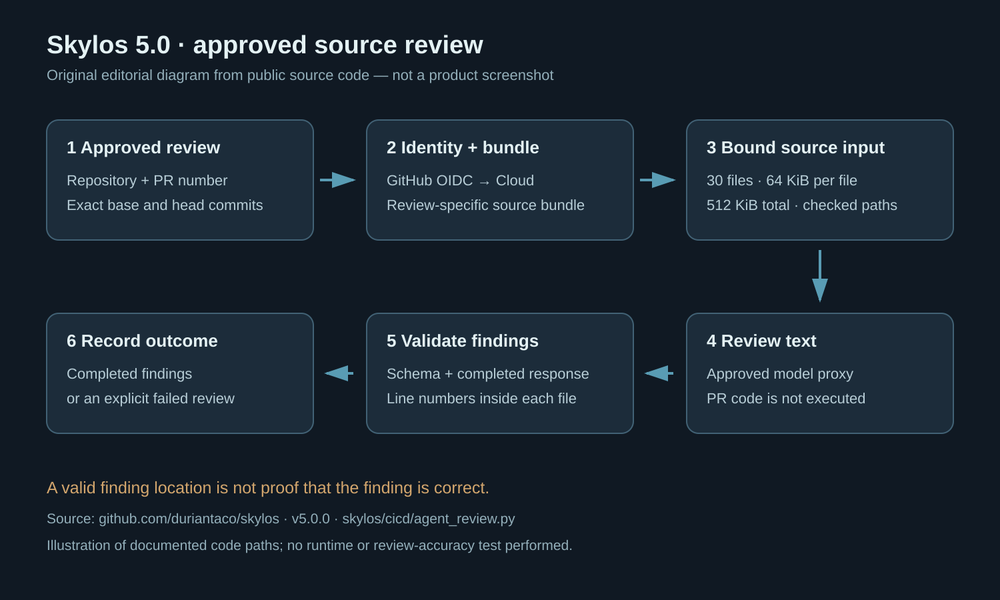
Skylos 5.0给需要AI补充代码审查的开发团队增加获批后运行的云端入口，发行时间列为近三日补充。
输入审查ID，执行器核对仓库与PR提交身份，读取限定源码包，经模型分析后返回文件、行号和问题说明。
新命令不执行PR代码；最多处理三十个文件、合计五百一十二KiB源码，并检查模型返回结构与行号范围。
审批针对具体base与head提交；缺少身份、超出限制或输出不完整会失败，不能把失败审查写成未发现问题。
产品判断
Apache许可覆盖公开代码，新增审查属于付费Cloud路径，精确报价未知；它不能替代运行测试或完整仓库理解。
AI PRODUCT DAILY / 2026-10-24软硬结合／仓储巡检 · 2026-10-21 · 本周回看
Dexory给高货架异常标位置，再复核低置信图片
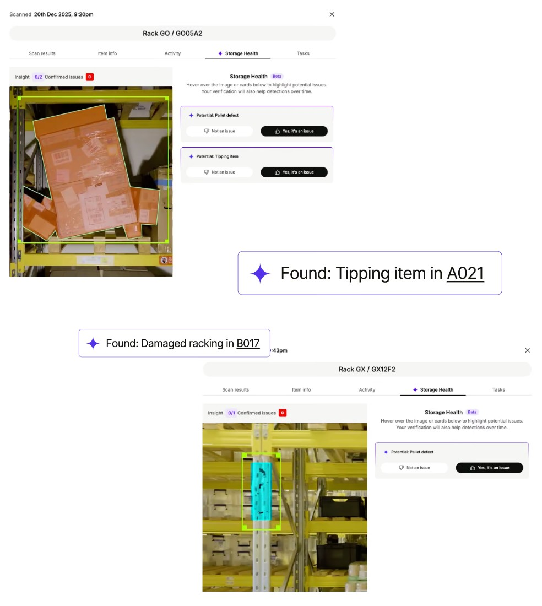
仓库团队不只要知道货在哪，也要发现高处开箱、托盘错位和倾斜货物。
机器人沿通道采集多层货架图像，StorageHealth标记异常，人员按位置、时间和图片远程分拣。异常记录可回到原图，先远程判断，再安排人员前往对应货位。
10月21日新增CosmosReason2-2B，用仓库图像微调，并在现有模型低置信时补充分析。厂商比较2B与8B后选择较小版本；新增分析复用同一次巡航的照片。
自然语言提示定义检查问题，不等于机器人自动搬货或完成结构安全鉴定。关闭异常、复核货物与下次扫描确认变化仍由仓库流程承担。
产品判断
较小模型是部署选择，误报、漏报、响应时延和实际报价仍未公开到可独立比较的程度。
AI PRODUCT DAILY / 2026-10-24研究原型 · 2026-10-22T08:12:49Z · 近三日 / 边界见深读
把材料摆成关系，再让代理按这张工作地图接着做
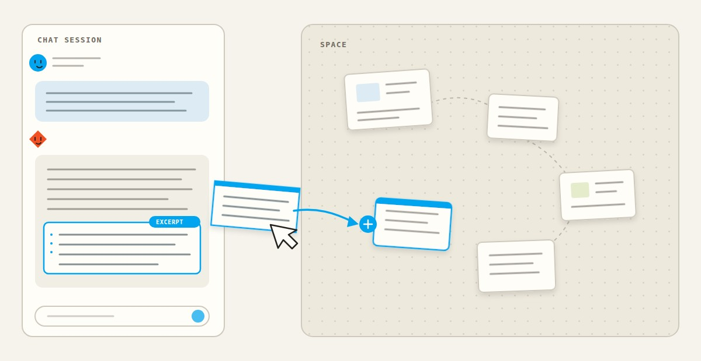
MalleableSpace让研究者把笔记、PDF、网页和未决问题放在同一画布。
选中节点、放入同一框或连上线，再提问；代理可读取相关材料，回答也能拖回画布。回复片段可独立保留为节点，未决问题也能留在材料旁，供下次继续。
新论文记录七名熟练用户的三个月使用，代码链接指向已有Huabu；不是今天首次发布应用。
Agent可改内容与布局，用户逐项保留或撤回；后续改动冲突时，旧改动不能强行回滚。Chat只读取空间；Agent能移动、连接或删除节点，审查卡显示改动前状态。
产品判断
适合需要反复组织证据的任务；整理画布仍花时间，模型与外部代理费用另计。
AI PRODUCT DAILY / 2026-10-24研究原型 · 2026-10-22T09:48:43Z · 近三日 / 边界见深读
先把奖励与约束问清楚，CARL再生成训练代码
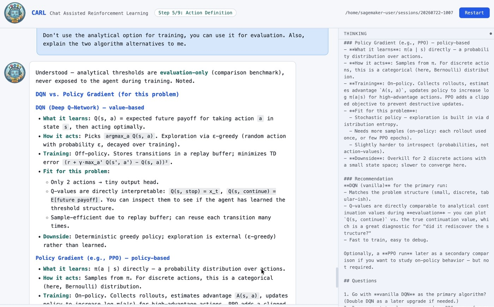
CARL让领域专家用对话定义强化学习问题，不必先写完整训练脚本。
目标、状态、动作、奖励与训练预算逐步确认，再自动生成、测试和运行代码。十步流程中前七步由人参与，辅助角色提出的答案可接受、编辑或拒绝。
每步只保留简明决策摘要，辅助角色Trillian给建议，用户能改写或拒绝。确认结果保存到会话目录，可恢复旧会话并重访某一步决定。
看过策略结果后可回到规格或参数重跑，代码跑通并不代表优化了正确问题。输出包含代码、运行记录、图表与报告，领域专家据此判断应改规格还是重跑训练。
产品判断
公开GPL-3.0实现需Bedrock访问；两项作者案例尚不是跨领域稳定性证明。
AI PRODUCT DAILY / 2026-10-24论文／创作研究框架 · 2026-10-22T17:57:20Z · 近三日 / 边界见深读
积木模型先查碰撞与连接，再交给人真正搭起来
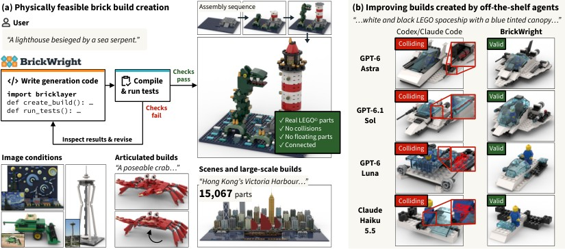
BrickWright让创作者用文字或图片描述积木造型，由现成编程代理生成可编辑结构。
代理用BrickLayer找零件、对齐连接件，检查碰撞与悬空，再渲染并导出LDraw。生成的是描述零件关系的程序，连接接口减少逐个计算绝对坐标的工作。
省去逐个计算零件姿态和目测找穿模的部分工作，支持已有模型的修改与活动部件演示。可旋转示例供多视角检查。
作者的512题结果检验几何有效性，未涵盖重心稳定、搭建顺序或真实零件库存。有效性结果来自反复校验与修正，不是所有模型首次生成就成功；真实搭建仍可能发现承重问题。
产品判断
这是研究框架；公开仓库仍写代码即将提供，项目页可看模型，不是现成消费应用。
AI PRODUCT DAILY / 2026-10-24论文／可交互三维生成研究 · 2026-10-22T17:59:53Z · 近三日 / 边界见深读
点出一条手臂，必要时再画框：FlexPart让三维拆件少做一层标注
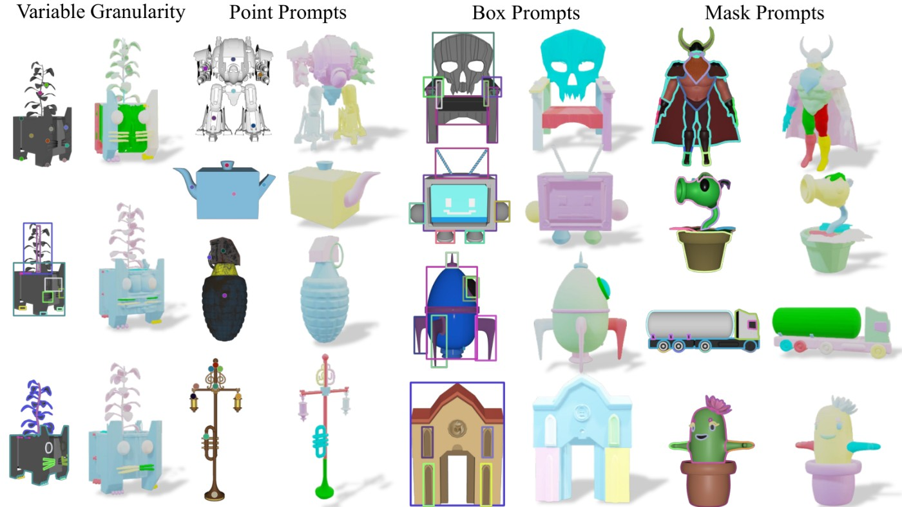
FlexPart面向希望把参考图片变成可分别修改部件的三维创作者。
上传图片后点选或框选部件；同一模型也接受蒙版，输出独立GLB网格及组装结果。本地Gradio界面先移除背景，命令行还可导出旋转预览。
比先生成整块模型再切分，多了直接控制拆件位置的入口；可按任务选择标注精度。
单视图遮挡仍会造成错位，点在边界附近也更易出错；几何指标不代表全套部件齐全。多种提示同时输入时，部件数量与顺序必须一致；细小突出物也要检查是否被去背景步骤抹掉。
产品判断
已有本地演示与实现，需GPU和多套模型组件；代码MIT不等于上游权重都无额外条款。
AI PRODUCT DAILY / 2026-10-24论文／游戏视频渲染研究 · 2026-10-22T15:58:39Z · 近三日 / 边界见深读
给灰盒游戏换画风，还得记住每个角色何时进场
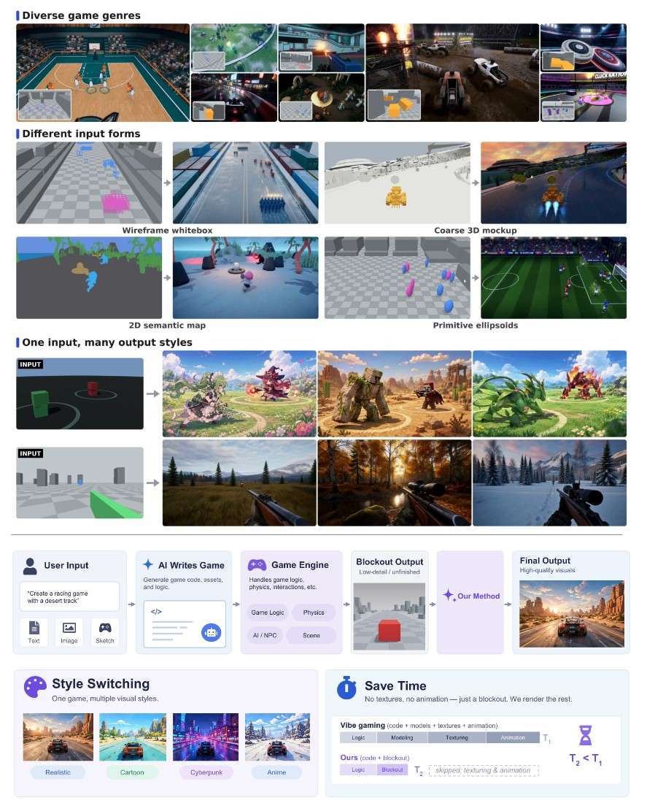
AnyGameRenderer面向已经能运行、画面却仍由灰盒和彩色几何体构成的游戏原型。
输入玩法录像、角色对应说明与画风文字，可加参考图；输出同段玩法的重新渲染视频。文字需说明每种颜色和形状代表哪个角色，参考图用于限制外观。
引擎继续负责规则和位置，模型补视觉细节；关键技术是视频模型LoRA和实体对应训练。训练特意加入片段中并未出现的角色描述，让模型按录像判断角色是否存在。
五十九案例评估仍有角色漏画、增画和时序错误，精美画面不等于玩法状态完全一致。检测器本身也会出错。
产品判断
仓库列明高显存GPU与大内存要求，约五秒片段需十七分钟；适合研究与预览，不是实时游戏渲染器。
AI PRODUCT DAILY / 2026-10-24论文／界面定位基准 · 2026-10-22T13:43:45Z · 近三日 / 边界见深读
找到单元格之后，代理还得点中那条一像素宽的边
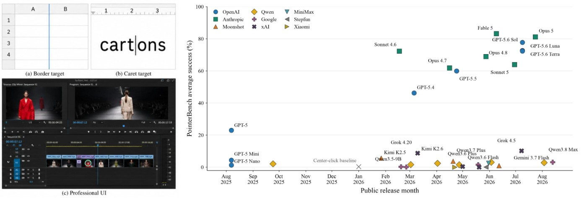
PointerBench针对电脑操作代理常见的小失误：列宽边界、字符间光标和紧贴文字的选区。
输入截图与明确指令，模型输出像素点或矩形；三个子集共1500题，把定位与任务规划分开测量。输出契约要求JSON点位或边框，格式错误也计失败。
新论文比较表格、文字和生成的专业软件界面，揭示同一个模型在不同操作粒度上的落差。截图固定为1024×768，换显示缩放后目标几何不同；专业界面是生成素材而非运行中的软件。
坐标系与输出类型会影响计分；框选任务只返回点击点，不能算完成。
产品判断
适合开发者定位操作失败，不能当成真实应用全流程成功率；代码与数据分别采用MIT和CC BY许可。
AI PRODUCT DAILY / 2026-10-24
逐项目追溯来源与图证
- 01 Alloop Trio
- 02 Birdbuddy Nook / Home
- 03 Monish
- 04 Instant Search
- 05 Roborock Qrevo Edge 3 Pro
- 06 极米记得 G1／L1
- 07 Meta Adventurer plug-in case
- 08 讯飞输入法 16.0
- 09 Claude Duet
- 10 Claude Enterprise
- 11 Plango
- 12 GitHub Copilot in Teams
- 13 Resend Inboxes
- 14 OpenHands Agent Canvas 1.33.0
- 15 Inyon 0.20.2–0.20.5
- 16 Paperclip v2026.1023.0
- 17 Promptfoo 0.125.0
- 18 Skylos 5.0.0
- 19 Dexory Storage Health + Cosmos Reason2
- 20 MalleableSpace / Huabu
- 21 CARL
- 22 BrickWright
- 23 FlexPart
- 24 AnyGameRenderer
- 25 PointerBench